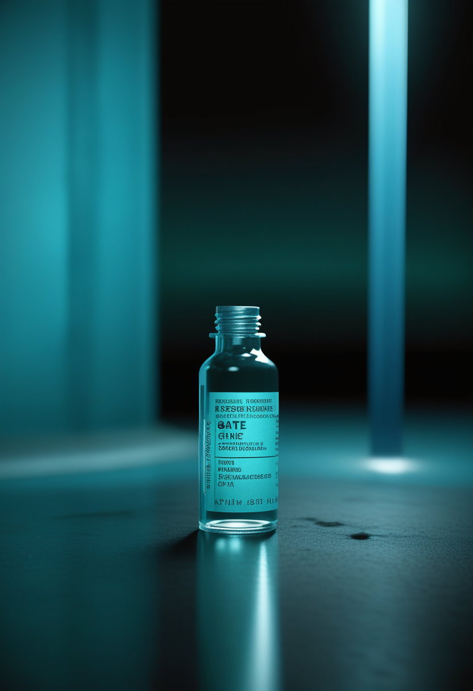
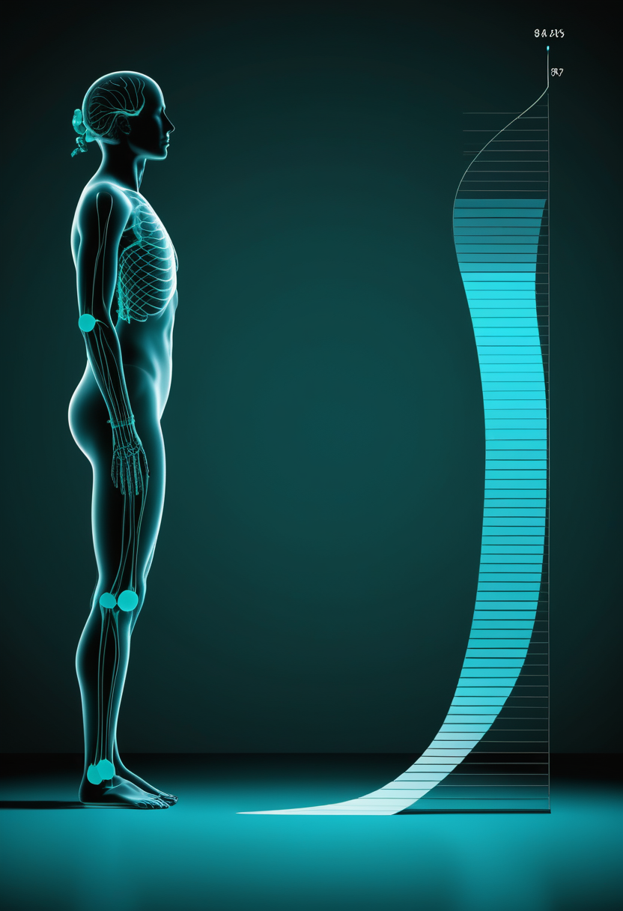
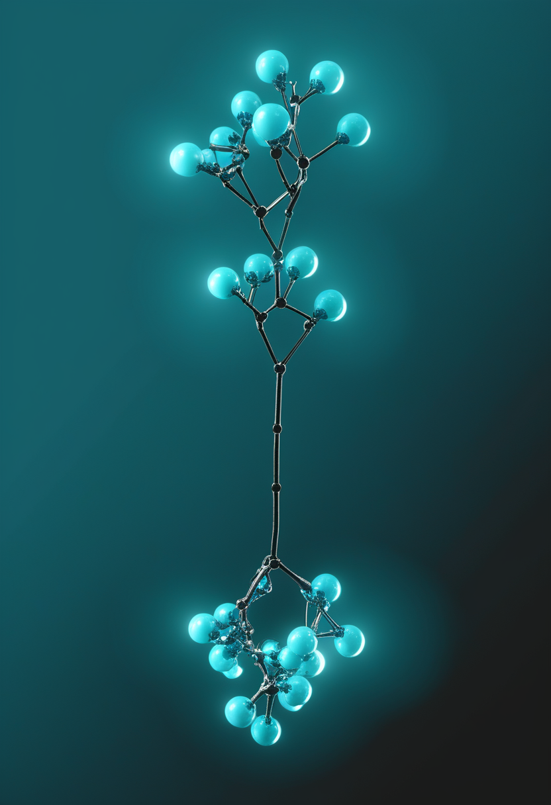

土曜日の便り。WHOは8月31日付で、ブンディブギョ型エボラ(BDBV)流行下における既承認ワクチンErvebo®の使用を『研究プロトコル内に限る』とする緊急指針を出し、DRCの流行は9月2日までのデータで確定6,342例・死亡3,072人まで拡大した。自由の章では、治療抵抗性うつ病に挑む埋め込み型BCI『DOT』の初の臨床試験開始と、厚さ50マイクロメートルの脳チップ『BISC』を報じる。基盤の章では、エボラの続報に加え、前号で『最新取得できず』とした麻疹の空白を埋め、DRCが疑い10万例超の麻疹流行も同時に抱える実態を伝える。畏敬の章では、土星の南極に約90年ぶりに確認された十角形の大気波と、プレートテクトニクスなしで進化した火星の巨大マグマ系を紹介する。美の章では、デジタルツイン脳を使って精神疾患ネットワークを摂動する研究と、『AIの側の福祉』が哲学的思弁から研究プログラムへ移ったことを取り上げる。命の章では、アピテグロマブの審査経路に関する前号の記述を訂正し、遺伝子治療Itvismaが2歳以上・成人まで届いたことと、スピンラザの高用量化・サラネルセンの年1回化という既存薬の進化を伝える。
WHOは8月19日に開かれた予防接種に関する戦略諮問委員会(SAGE)の臨時会合を受け、8月31日付でブンディブギョ型エボラ(BDBV)の流行時における既承認エボラワクチンErvebo®の使用に関する緊急指針を出した。焦点は『別種のエボラウイルス向けに承認されたワクチンを、承認外の型に使ってよいか』である。指針は、交差防御の可能性を示唆する所見はあるものの、ヒトで臨床的に意味のある防御が得られるかを判断するには証拠が不十分だとし、原則として研究プロトコルの枠内での使用を勧告した。最も確かな証拠はリング接種の無作為化比較試験(RCT)から得られるとし、それ以前に広範な使用を検討する場合は包括的なリスク低減計画を求めている。DRCの流行は9月2日までのデータで確定6,342例・死亡3,072人まで拡大している。
Scholar Rockの筋標的薬アピテグロマブは、FDAのアクション日(PDUFA)である9月30日まで本日で残り25日となった。ここで前号の記述を訂正する。本紙は『第2の充填・仕上げ施設を含む2系統の審査経路が並行』と書いたが、正しくは2025年9月23日の完全回答書(CRL)の原因となったCatalent Indiana社を申請から削除し、審査は第2の充填・仕上げ施設のみで進行している。CRLは製造施設の査察所見に関するもので、有効性・安全性への懸念は指摘されていない。BLAは2026年3月に再提出され、9月30日のアクション日が設定された。承認されれば、SMNタンパクを増やす既存薬に上乗せする世界初の筋標的療法となる。

ゾルゲンスマ(オナセムノゲン アベパルボベク)は静脈内投与のため体重の制約があり、事実上は乳児が対象だった。これを髄腔内投与に切り替えたItvisma®を、FDAは2025年11月24日に承認した。SMN1遺伝子の変異が確認された2歳以上の小児・青年・成人が対象で、この年齢層に使える唯一の遺伝子補充療法となる。年齢や体重による調整が不要な固定用量の1回投与という設計も特徴である。根拠となったSTEER試験は、2歳以上18歳未満・治療歴のないSMA 2型の126人を対象に、遺伝子治療群75人とシャム手技群51人を比較し、52週時点でHFMSEが+2.39点対+0.51点だった。米国では2025年12月に供給が始まり、欧州でもCHMPの肯定的意見が出ている。

FDAは2026年3月、ヌシネルセン(スピンラザ)の高用量レジメンを承認した。50mgの負荷投与を14日間隔で2回行う設計で、10年近く使われてきた既存の用法より高い曝露を狙う。同じBiogenの次世代アンチセンス核酸サラネルセンは、機序を保ったまま骨格の化学修飾で効力を高め、年1回投与を目指す薬剤で、2026年6月にFDAのブレークスルーセラピー指定を受けた。第3相は3試験構成に整理され、生後42日までの乳児30人を目標に登録するSTELLAR-1、無作為化二重盲検シャム対照のSTELLAR-2、15〜60歳を対象とするSOLARが動いている。既承認薬の用量を上げる道と、投与間隔を年1回まで延ばす次世代薬の道が、同じ企業のなかで並走している構図である。
9月30日にアピテグロマブが加われば、SMNを増やす軸と筋肉を戻す軸が初めて揃う。だがその手前で今号が示すのは地味な事実の積み重ねだ ― 審査経路の記述を自ら訂正し、既存薬の高用量化と次世代薬の年1回化が同時に進み、遺伝子治療がついに乳児の外へ届いた。派手な承認より、選択肢が『年齢・経路・回数』で細分化していく過程こそが今のSMA治療の実相である。
Motif Neurotechは、治療抵抗性うつ病に対する治療用BCIの初の臨床試験を始めるFDA承認を得た。同社の第1号製品DOT(Digitally programmable Over-brain Therapeutic)はブルーベリーほどの大きさで、頭蓋骨のなかに収まり硬膜の上に置かれる。脳を露出させず、脳に直接触れないまま、うつに関わる脳回路へ電気刺激を届ける設計で、埋め込みは外来の20分程度の処置で済むという。給電は無線。技術はライス大学のRobinson研・Yang研で10年以上積み上げられた研究に由来し、試験はベイラー医科大学、UTHealth Houston、マサチューセッツ総合ブリガム、エモリー、アイオワ大学、ユタ大学、ニューヨーク大学などと共同で行われる。BCIの主戦場が『失われた出力を取り戻す』から『有病率の高い精神疾患を治療する』へ広がった点が重要である。
コロンビア大学工学部、ニューヨーク・プレスビテリアン病院、スタンフォード大学、ペンシルベニア大学のチームが、単一のCMOS集積回路だけで脳と外部コンピュータを結ぶ無線BCI『BISC』を発表した。厚さ50マイクロメートル・体積約3立方ミリメートルまで薄型化されたチップは、脳の表面に沿うように変形し、65,536電極・1,024記録チャンネル・16,384刺激チャンネルを集積する。無線帯域は約100Mbpsで従来のBCIの100倍以上。従来型が複数の電子部品を大きなカニューラに収めていたのに対し、BISCは頭蓋骨と脳のあいだの隙間に滑り込ませられる単一チップという点が異なる。てんかん・脊髄損傷・ALS・脳卒中・視覚障害への応用が見込まれ、ニューヨーク・プレスビテリアン病院で術中の短時間記録が始まっている。
視線入力の最大の弱点は、視線が『見ること』と『選ぶこと』を区別できない点にある。一定時間見つめて確定するドウェル入力は、この曖昧さを時間で埋める方法だが、誤選択と眼精疲労の原因にもなる。新しい研究は、画面までの視距離に応じてターゲットの大きさや当たり判定を動的に調整することでドウェル入力の使いやすさを改善する手法を提案している。視距離が変わると視線推定の角度誤差が実寸の誤差として拡大するため、固定サイズのボタンは近距離では過剰に大きく、遠距離では小さすぎる、という単純だが見過ごされてきた問題への対処である。製品側でも、Tobii Dynavoxが屋外の明るい環境で使える視線入力を実装するなど、実生活での可用性を広げる動きが続いている。
うつ病のためのBCIは『代替』ではなく『治療』であり、適応が広がるほど埋め込みの侵襲性に見合う便益をどこで線引きするかが問われる。同じ日、脳チップは厚さ50マイクロメートルまで薄くなり、視線入力は視距離という地味な変数ひとつで実用性が変わることが分かった ― BCIの前進は派手な承認より、こうした小さな工学的調整の積み重ねで出来ている。
WHOは8月31日付で、BDBV流行下における既承認エボラワクチンErvebo®の使用に関する緊急指針を公表した。8月19日のSAGE臨時会合を踏まえたもので、5月28日付の初版を更新する位置づけになる。指針は適応外使用の便益・リスク・不明点を整理したうえで、Ervebo®は研究プロトコル内でのみ使用するよう勧告した。理由は明快で、交差防御を示唆する所見はあるが、ヒトでの臨床的に意味のある防御を判断するには証拠が足りないためである。証拠の作り方についても、リング接種のRCTが最も確かだと名指しした。エボラウイルス(EBOV)の流行歴がある国の医療従事者・最前線職員への予防接種は引き続き推奨される。
9月3日の報告(9月2日までのデータ)で、DRCの累計は確定6,342例・死亡3,072人。前号で報じた6,250例・3,039人から+92例・+33人が上積みされた。致死率は約48.4%で、前号の約48.6%からわずかに低下したが実質は横ばいである。新規92例の内訳はイトゥリ州60例、北キブ州25例、オー・ウエレ州5例、チョポ州2例。累計では、イトゥリ州が5,164例・2,342人(致死率約45.4%)、北キブ州が913例・614人(同約67.3%)で、2州で全症例の約96%を占める。回復は1,475人、隔離入院は770人で前号の869人から99人減った。接触者追跡は特定された接触者の86.5%が追跡下にある。
前号で『最新取得できず』とした麻疹の数値を補足する。MSFがDRCの公式データとして示したところでは、1月から7月19日までに全国で疑い10万8,643例・死亡1,394人が報告され、うち5万827例超が北キブ州・南キブ州に集中している。同期間のコレラは疑い3万5,464例超・死亡1,051人超で、ゴマでは5月から8月上旬までにMSF支援施設で2,410人超が治療を受けた。エボラ対応に資源が吸い寄せられる一方で、経口補水や追加接種で防げるはずの死亡が積み上がっている構図である。なお本紙が前号で用いた国連の数値(コレラ累計3万400例超・約700人死亡)とは集計期間・定義が異なるため、単純比較はできない(集計期間は要確認)。
隔離入院が869人から770人へ減ったのに、新規は+92例と落ちていない。病床が空いたのではなく、回復と死亡の両方が同時に進んだ結果と読むのが妥当である。そしてワクチンの答えが『研究としてのみ試せ』である以上、DRCが同時に抱える麻疹10万例超・コレラ3万例超という『防げるはずの死』は、エボラの陰でなお解決を待っている。
ハッブル宇宙望遠鏡のOPAL(外惑星大気レガシー)プログラムと地上観測から、土星の南極を取り巻く十角形(デカゴン)の波が確認された。Agustín Sánchez-Lavega氏らのチームがScience Advancesに発表したもので、9月3日に各所で報じられた。波はplanetographic緯度で約58°S〜63°Sに位置し、差し渡しは約16万7,820km、10本の各辺は約1万6,782kmに及ぶ。波そのものは東へ秒速2.5mでゆっくり動き、60.5°Sのゾーナルジェット(秒速116m)よりはるかに遅い。時間をさかのぼると、2023年10月のハッブル画像に63°S付近の淡い10頂点構造が写っており、2024年8月に輪郭が鋭くなり、2025年8〜9月に10頂点すべてが揃った。土星北極の六角形は有名だが、13年以上観測を続けたカッシーニですら南半球で同種の構造を捉えたことはなく、大気の多角形ジェットが両極で生じうることを示す初の事例となる。
オックスフォード大学とブリストル大学のチームが、NASAのInSight着陸機が2018年から集めた地震データを再解析し、火星の地殻が数百〜数千kmに及ぶ巨大なマグマ系によって進化してきたことを示した。深さ約24km付近に見つかっていた地震波速度の境界は、これより下が鉄・マグネシウムに富む超苦鉄質岩、上が珪酸塩に富む苦鉄質岩であることを示唆し、溶融したマグマが繰り返し分化・沈殿して層状化した痕跡と解釈された。地球ではプレートテクトニクスが地殻を混ぜ返し組成を進化させると考えられてきたが、火星にはその機構がない。研究チームは『浸透地殻マグマ作用』と呼ばれる、プレート運動を伴わずに地殻全体を通じて溶融岩が繰り返し再処理される過程を提案する。プレートテクトニクスなしでも複雑な地殻進化が起こりうるなら、地球と条件の異なる系外惑星でも居住可能性が生まれる余地が広がる。
土星の十角形は、カッシーニが13年見ても現れなかったものが、ハッブルの定点観測で2年かけて育つ様子として捉えられた。火星の巨大マグマ系も、プレートテクトニクスという地球だけの特権だと思われてきた仕組みなしに複雑な地殻進化が起こりうることを示した。どちらも、長く見る・深く測ることでしか崩せない先入観があったという点で響き合う。
デジタルツイン脳(DTB)を使って、精神疾患の基盤にある機能的な脳ネットワークをシミュレーション上で摂動・操作する研究が公表された。狙いは脳の写しを作ること自体ではなく、実際の患者では試せない介入を計算機上で試し、その結果から機序を推定することにある。著者らは、デジタル脳モデルが機序的な摂動実験、行動の予測、患者の層別化のためのプラットフォームとして機能しうるとし、精密神経科学・精密精神医学の土台になると位置づけている。ただし本稿は査読前のプレプリントであり、結論の確度は査読後の評価を待つ必要がある(要確認)。前号までの『デジタルツイン脳=計測がボトルネック』『ニューラル・デジタルツイン=BCIの較正器』という実務的な着地点に、『精神疾患の実験台』という三つめの応用が加わった。
人間のデジタル化を論じるとき、これまで問われてきたのは『人間の写しに権利はあるか』だった。いま同じ問いが逆側からも立てられている。2024年に公表され広く参照されている報告書は、近い将来のAIシステムに意識ないし頑健な行為者性が宿る現実的な可能性があり、AI企業にはそれを深刻な論点として認め、自社システムを福祉に関係する特徴について評価し、方針と手続きを準備する責任があると論じた。2026年初頭にはAI意識・AI福祉に特化した初の会議が開かれ、この議論が純粋な哲学的思弁から、評価手法と組織的な枠組みを備えた研究プログラムへ移ったことが確認されている。
査読誌Frontiers in Artificial Intelligenceに、動物福祉で確立した『五つの自由』(飢え・渇きからの自由、不快からの自由、痛み・傷害・病気からの自由、正常な行動を表現する自由、恐怖・苦悩からの自由)を下敷きに、ヒトとAIの相互作用の倫理枠組みを構成する論文が掲載された。AIが感じるかどうかを先に決めずに、既存の福祉概念を写像することで実務的な指針を引き出そうとする点が特徴で、不確実性のもとでの意思決定という現実的な立て方をしている。人間を機械に写す議論と、機械を生き物に准えて扱う議論が、同じ倫理的空白を別方向から埋めにきている。
『人間のデジタル化』の議論に、はっきり第三の軸が加わった。人間を写す(グリーフテック・デジタルツイン)に続いて、機械の側の処遇を問う軸である。三つとも、確たる意識の理論がないまま実務の指針だけが先に必要とされている。
土曜日の便り。WHOはブンディブギョ型エボラ流行下でのErvebo使用を『研究プロトコル内に限る』と勧告し、DRCの確定例は9月2日までのデータで6,342例・死亡3,072人まで拡大したことを伝えた。自由の章では、治療抵抗性うつ病への初の治療用BCI臨床試験と、厚さ50マイクロメートルまで薄型化された脳チップ『BISC』という、BCIの適応と実装の両方が広がっている様子を報じた。基盤の章では、エボラの続報に加え、前号の空白だった麻疹の数値(疑い10万8,643例・死亡1,394人)を埋め、DRCが複数の流行を同時に抱える実態を伝えた。畏敬の章では、土星の南極に確認された十角形の大気波と、プレートテクトニクスなしで進化した火星の巨大マグマ系という、二つの惑星科学の発見を紹介した。美の章では、デジタルツイン脳を使った精神疾患研究と、『AIの側の福祉』が研究プログラムとして立ち上がったことを取り上げた。命の章では、アピテグロマブの審査経路に関する記述を訂正し、Itvismaが2歳以上・成人まで届いたことと、既存のASO治療が高用量化・年1回化という形で進化していることを伝えた。
では、また明日の朝に。 — JaH